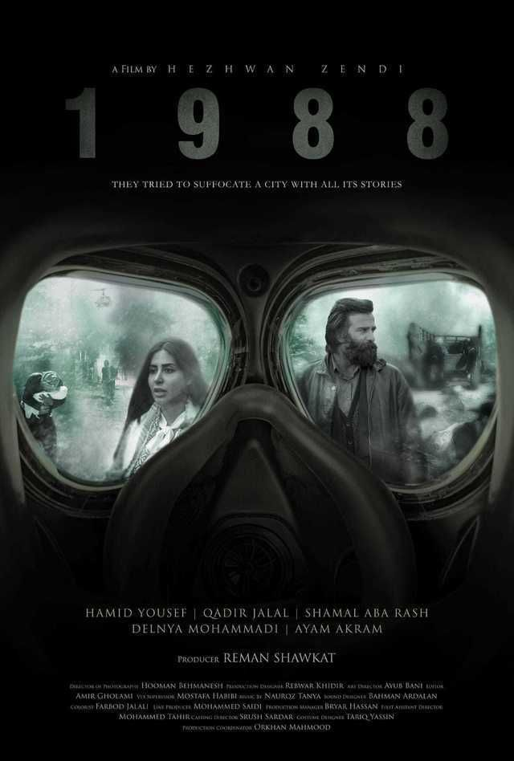
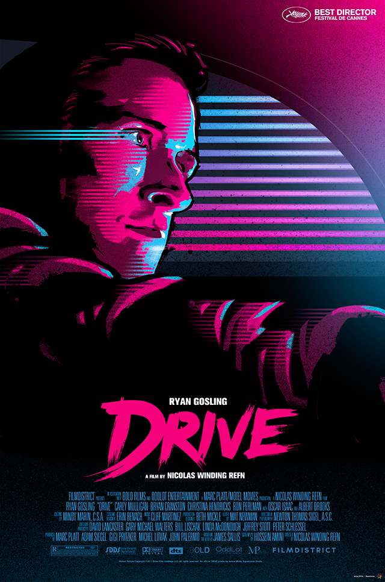

Princess Mononoke
This is one of my favorite animes. I love it. I advice anyone who wants to start watching anemis.

1988
It is a Kurdish movie, which reflects my nationality. It portrays the tragic situation that occurred to my nation in 1988.
Drive
Super beutiful film. Really artistic
Mad Max
I really like this movie because it is really realstic.
the quality of the film is perfect and the acting of the actor are relly good